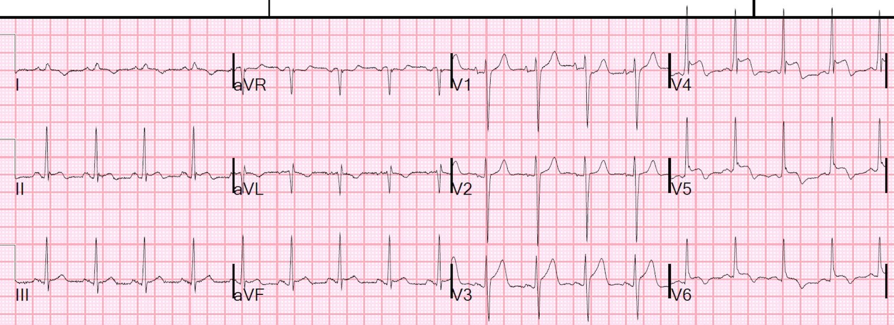
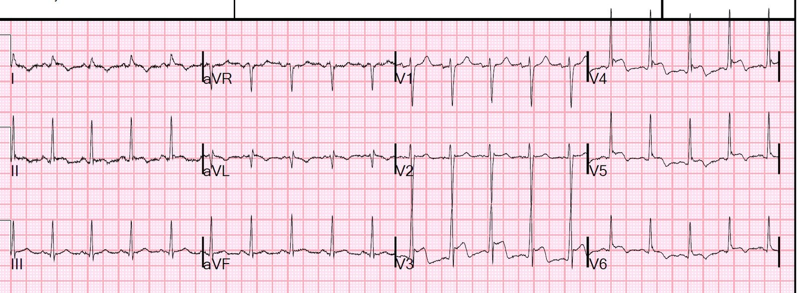
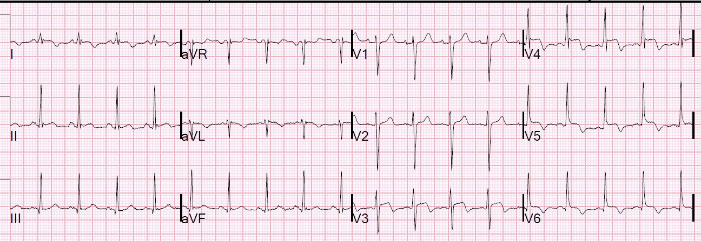
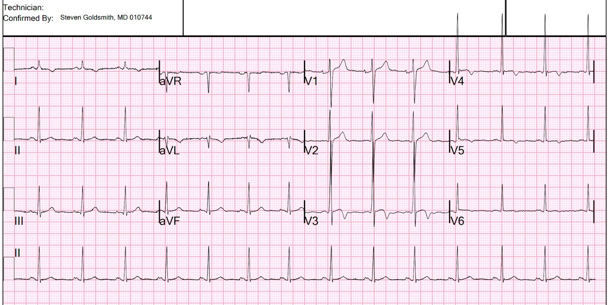
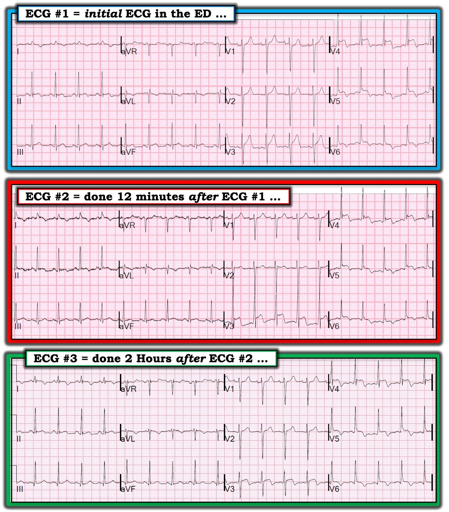

21/07/2019 — Điện tâm đồ có ST chênh lên đáng kể này biểu hiện điều gì?
Bản dịch tiếng Việt của bài "What does this ECG with significant ST Elevation represent?" – Dr. Smith’s ECG Blog. Giữ nguyên toàn bộ 7 hình ảnh của bản gốc.
2 điện tâm đồ liên tiếp này mới được nhắn tin gửi cho tôi gần đây. Chúng được ghi cách nhau 12 phút:
“Chào Steve, bệnh nhân 30 mấy tuổi đau ngực một tuần, chủ yếu ở bên phải, đỡ hơn khi ngồi dậy.”:




Bạn nghĩ sao?
QTc lần lượt là 330 ms và 373 ms
Đây là những gì tôi nhắn lại:
Những điện tâm đồ này trông giống một trường hợp rất rõ rệt của sóng T đảo ngược lành tính (Benign T-wave Inversion). Tôi không nghĩ đây là nhồi máu cơ tim do tắc cấp (OMI). Hãy làm siêu âm tim cản âm khẩn.
Đây là những lý do khiến nó trông không giống OMI:
1. đoạn ST phẳng ở V4
2. sóng R rất lớn ở V4
3. khoảng QT rất ngắn
4. khía điểm J (J-point notching)
5. tái cực sớm điển hình ở V3
6. các đặc điểm điển hình của sóng T kiểu “sóng T đảo ngược lành tính” ở V5, V6.
Tôi đoán bệnh nhân là người Mỹ gốc Phi.
Tôi có bỏ qua không? Không. Tôi sẽ cho làm siêu âm tim. Tôi chắc chắn 99% rằng đây không phải OMI.
Siêu âm tim khẩn đã được thực hiện:
Kích thước thất trái bình thường, bề dày thành bình thường và rối loạn chức năng tâm thu mức độ nhẹ đến trung bình.
Phân suất tống máu thất trái ước tính là 43%.
Giảm động toàn bộ.
Kết quả troponin I đầu tiên sau đó trả về tăng khá cao, ở mức 9.8 ng/mL.
Khi không có rối loạn vận động thành, đặc biệt khi phân suất tống máu giảm toàn bộ, mức troponin tăng khá cao như thế này gợi ý mạnh mẽ viêm cơ tim lan tỏa.
Khi nào viêm cơ tim giống OMI? Viêm cơ tim thường khu trú hơn, có cả ST chênh lên khu trú lẫn rối loạn vận động thành khu trú, cùng với troponin tăng, và khi đó bắt buộc phải chụp mạch vành cấp cứu để phân biệt hai thực thể này. Chẩn đoán xác định là bằng MRI.
Tôi tìm hiểu thêm về bệnh sử:
Bệnh nhân người Mỹ gốc Phi 30 mấy tuổi, khó chịu kiểu đau nhói ở vai/xương bả vai/ngực bên phải trong 5-7 ngày, đến viện với nhịp nhanh xoang. Bệnh sử đau ngực liên tục suốt một tuần như vậy cũng gợi ý viêm cơ tim hơn nhiều.
OMI nhìn chung khởi phát cấp tính hơn, trừ khi có đau thắt ngực từng cơn. Rất khó là OMI khi đau liên tục suốt một tuần.
2 giờ sau, điện tâm đồ này được ghi:


Tôi thì sẽ cho rằng chúng nhiều khả năng cũng do vị trí đặt điện cực khác đi, hoặc do sự biến thiên thường gặp theo từng giờ của ST chênh lên không do thiếu máu cục bộ.
Tuy nhiên, để chắc chắn, bệnh nhân đã được chụp mạch vành.
Chụp mạch vành bình thường
Protein phản ứng C (CRP) trả về 250 mg/L, phù hợp với viêm cơ tim.
Troponin các lần liên tiếp vẫn ở khoảng 9-11, không có tăng và/hoặc giảm lớn nào, điều này cũng không điển hình cho OMI.
Sau đó bệnh nhân được chụp MRI:
1) Chức năng thất trái giảm nhẹ, không có rối loạn vận động thành khu trú 2) Ngấm thuốc muộn trong cơ tim dạng từng mảng, phù hợp với viêm cơ tim. Cũng có ngấm thuốc màng ngoài tim nhẹ, phù hợp với viêm màng ngoài tim. Các dấu hiệu nói chung phù hợp với viêm cơ-màng ngoài tim.
Một tháng sau, một điện tâm đồ giai đoạn hồi phục được ghi:


Sóng T đảo ngược lành tính điển hình vẫn còn. Nhưng ST chênh lên đáng kể đã hết.
Như vậy, ST chênh lên (STE) đó là do viêm cơ-(màng ngoài) tim.
Tóm tắt:
Đó không phải sóng T đảo ngược lành tính, nhưng cũng không phải OMI.
Khi lo ngại OMI nhưng điện tâm đồ và bệnh sử lại không thật sự phù hợp, có thể làm siêu âm tim cản âm khẩn thay cho chụp mạch vành ngay lập tức.
Rối loạn vận động thành và troponin tăng có thể gặp trong viêm cơ tim, và khi đó bắt buộc phải chụp mạch vành để phân biệt viêm cơ tim với OMI.

===================================
Bình luận của KEN GRAUER, MD (21/7/2019):
===================================
Ca này đặt ra những vấn đề thú vị liên quan đến CÁCH diễn giải điện tâm đồ ban đầu ( = điện tâm đồ #1 trong Hình 1). Bệnh nhân là một nam giới khoảng 30 tuổi, đến khoa cấp cứu (ED) với bệnh sử đau ngực 1 tuần, chủ yếu ở bên phải — và đỡ hơn khi ngồi dậy.
- Điện tâm đồ được ghi lại 12 phút sau đó ( = Điện tâm đồ #2).
- Điện tâm đồ thứ 3 được ghi 2 giờ sau đó ( = Điện tâm đồ #3).
Thêm những điểm giảng dạy tinh tế khác nảy sinh khi xem xét kỹ các điện tâm đồ liên tiếp trong ca này.


SUY NGHĨ: Như tôi đã gợi ý trong Bình luận của tôi về ca của Dr. Smith ngày 19 tháng Bảy — Một cách tối ưu để nâng cao kỹ năng đọc điện tâm đồ là luôn luôn diễn giải bản ghi ban đầu trong bối cảnh bệnh sử lâm sàng ngắn gọn được cung cấp (mà trong ca này là đau ngực bên phải, thay đổi theo tư thế suốt 1 tuần ở một nam giới khoảng 30 tuổi).
- Hãy diễn giải điện tâm đồ ban đầu này trước khi xem thêm thông tin (hoặc thêm bản ghi). SAU ĐÓ hãy cân nhắc lại diễn giải của bạn trong bối cảnh bất kỳ thông tin bổ sung nào bạn thu thập được.
Dr. Smith đã nhấn mạnh điểm MẤU CHỐT về việc diễn giải điện tâm đồ #1 — đó là, xét theo bệnh sử của bệnh nhân này, các dấu hiệu điện tâm đồ này khó có khả năng phản ánh OMI cấp.
- Ngoài các lý do Dr. Smith đã nêu ở trên chống lại khả năng điện tâm đồ #1 là OMI cấp — tôi muốn bổ sung: i) Đoạn ST dốc lên ở các chuyển đạo có ST chênh lên nhiều nhất (chuyển đạo V3, V4); ii) Không có ST chênh xuống soi gương; iii) Không có sóng Q đáng kể (tôi cho rằng có phức bộ rSr’ ở chuyển đạo aVL); và, iv) Bệnh sử không điển hình. Dĩ nhiên, không đặc điểm nào trong số này là quyết định — và, như Dr Smith đã nói — Siêu âm tim khẩn + đối chiếu lâm sàng liên tục là thiết yếu để đạt được mức chắc chắn tối đa rằng đây không phải OMI cấp.
- Một LƯU Ý về Bệnh sử: Khi (như xảy ra trong ca này) — bệnh nhân là người trưởng thành trẻ tuổi hơn và, bệnh sử không điển hình cho nhồi máu cơ tim cấp (tức là vị trí bên phải; đau ngực có yếu tố kiểu màng phổi và/hoặc thay đổi theo tư thế) — thì tỷ lệ hiện mắc của viêm cơ tim cấp như một khả năng chẩn đoán tăng lên đáng kể.
Vì vậy, tôi không nghĩ rằng điện tâm đồ #1 là hậu quả của OMI cấp. Tôi cũng thấy bản ghi này trông bất thường đối với một biến thể tái cực sóng T đảo ngược lành tính ( = ý kiến của tôi).
- Theo kinh nghiệm của tôi — Sóng T đảo ngược lành tính ở người trưởng thành trẻ tuổi hầu như luôn đi kèm ST dạng vòm và chênh lên, với sóng T đảo ngược đặc biệt nổi bật ở các chuyển đạo trước . Tôi không quen thấy sóng T đảo ngược đáng kể ở chuyển đạo V5 và V6 trong các biến thể lành tính mà không thấy chút nào ở chuyển đạo V2 và V3. Mặt khác — viêm cơ tim cấp có thể biểu hiện bằng các thay đổi điện tâm đồ khu trú ở một số chuyển đạo liền kề theo một kiểu ít điển hình hơn cho OMI cấp hay tái cực lành tính.
- Cái hay của troponin và Siêu âm tim tại khoa cấp cứu đối với những ca như thế này — là chúng có thể loại trừ biến thể lành tính khi thu được kết quả bất thường. Như Dr. Smith đã nói — chẩn đoán xác định trong ca này đạt được về sau, sau khi thông tim và chụp MRI.
Những Đặc điểm Điện tâm đồ Thú vị Khác:
CÂU HỎI: Hãy xem Điện tâm đồ #2 trong Hình 1. Phần ST chênh lên thêm mà giờ đây ta thấy ở chuyển đạo V3 có phản ánh sự tiến triển của các thay đổi thiếu máu cục bộ cấp không?
TRẢ LỜI: Tôi không cho rằng có thay đổi đáng kể nào giữa điện tâm đồ #1 và điện tâm đồ #2. Các chuyển đạo chi hầu như giống hệt nhau ở cả hai bản ghi. Khác biệt chính ở các chuyển đạo trước ngực — là vùng chuyển tiếp giờ đây xuất hiện sớm hơn nhiều ở điện tâm đồ #2 (sóng R đã chiếm ưu thế ngay từ chuyển đạo V3 — trong khi ở điện tâm đồ #1 vùng chuyển tiếp mãi tới chuyển đạo V4 mới xuất hiện). Kết quả là — hình dạng và mức độ ST chênh lên tương đối ở chuyển đạo V3 của điện tâm đồ #2 — tương đương với những gì ta thấy ở chuyển đạo V4 của điện tâm đồ #1.
- Thay vào đó — tôi cho rằng chuyển đạo V2 ở điện tâm đồ #2 đã bị đặt sai vị trí vì: i) Thực sự có một sóng r’ tận ở chuyển đạo V2 mà lẽ ra không nên có, nhất là vì không có sóng lệch dương tận (không có r’) ở chuyển đạo V1; và, ii) Về mặt sinh lý, thật không hợp lý khi sóng T ở điện tâm đồ #2 biểu hiện một sóng lệch dương 3mm ở chuyển đạo V1 — rồi sóng T chỉ vừa đủ dương ở chuyển đạo V2 — và, rồi sóng ST-T dương rõ rệt tới chuyển đạo V3.
- ĐIỂM THEN CHỐT (PEARL): Khi bạn phụ thuộc vào khả năng phát hiện những thay đổi ST-T tinh tế giữa các điện tâm đồ liên tiếp — bạn có thể muốn cân nhắc đánh dấu lên ngực bệnh nhân để đảm bảo vị trí đặt điện cực giống nhau cho các bản ghi liên tiếp. Làm như vậy sẽ tránh được sự nhầm lẫn mà chúng ta đang gặp phải khi đánh giá diễn tiến của các chuyển đạo trước ngực ở điện tâm đồ #2.
CÂU HỎI: Còn Điện tâm đồ #3 trong Hình 1 thì sao? Có sai không khi nghĩ đến sóng T tái tưới máu kiểu Wellens, xét đến sự thay đổi về hình dạng của chuyển đạo V3?
TRẢ LỜI: Ngay cả khi ngực đã được đánh dấu để đảm bảo vị trí đặt chuyển đạo trước tim nhất quán — vẫn có thể có sự biến thiên nhẹ về hình thái và biên độ QRS giữa các bản ghi. Đôi khi — chuyện này cứ thế xảy ra. Do đó — cần có sự phán đoán khi diễn giải các bản ghi liên tiếp:
- Tôi không có “công thức thần kỳ” nào để biết khi nào nên nói rằng khác biệt giữa điện tâm đồ này với điện tâm đồ tiếp theo là do biến thiên vị trí đặt điện cực hoặc do thay đổi trục — so với — một thay đổi ST-T đáng kể THỰC SỰ do nhồi máu đang tiến triển cấp. Thay vào đó — người ta hình thành một “cảm nhận tổng thể (Gestalt) để phán đoán” từ việc xem rất nhiều bản ghi, rồi đối chiếu ấn tượng của mình với các điện tâm đồ sau đó và với những gì đã xảy ra với bệnh nhân.
- LƯU Ý: Trục mặt phẳng trán có thể thay đổi tùy theo tư thế của bệnh nhân trên giường (tức là bệnh nhân nằm phẳng trên giường — hay ở một mức độ nào đó được nâng đầu do khó thở tăng lên khi giường để phẳng). Điều quan trọng là cần hiểu rằng thay đổi trục mặt phẳng trán đôi khi có thể làm thay đổi đáng kể hình thái QRS và hình dạng ST-T kéo theo. Dù vậy — đây không phải là yếu tố trong Hình 1 — vì cả hình thái QRS lẫn trục mặt phẳng trán ở các chuyển đạo chi của cả 3 điện tâm đồ đều hầu như giống hệt nhau!
- Bạn CÓ nhận thấy? — rằng điện tâm đồ #3 lại cho thấy sự trở lại của sóng S chiếm ưu thế ở chuyển đạo V3 (trong khi sóng R chiếm ưu thế ở chuyển đạo V3 của điện tâm đồ #2). Nhận xét này gợi ý với tôi rằng, với mục đích so sánh các thay đổi ST-T ở chuyển đạo trước ngực giữa 3 điện tâm đồ trình bày trong Hình 1 — chúng ta nên dùng điện tâm đồ #1 và điện tâm đồ #3 (chứ không dùng điện tâm đồ #2).
- Mặc dù ở điện tâm đồ #3 — chuyển đạo V3 giờ đây cho thấy ST dạng vòm và sóng T đảo ngược khá sâu (điều không thấy ở điện tâm đồ #1) — tôi không nghĩ đây là thay đổi thiếu máu cục bộ cấp vì: i) Thay đổi này thực sự chỉ thấy ở một chuyển đạo duy nhất (chuyển đạo V3); ii) Với tôi, chuyển đạo V3 ở điện tâm đồ #3 trông giống “kết quả tự nhiên” của việc là một “chuyển đạo chuyển tiếp” giữa những gì ta thấy ở chuyển đạo V2 và V4 của điện tâm đồ #3; và, iii) Tôi cho rằng các dấu hiệu ST-T khu trú với ít thay đổi trong 2 giờ ở người trưởng thành trẻ tuổi này, với triệu chứng không điển hình cho nhồi máu cơ tim cấp, thì phù hợp hơn nhiều với viêm cơ tim cấp.
Chúng tôi xin CẢM ƠN Dr. Smith vì ca bệnh thú vị này!